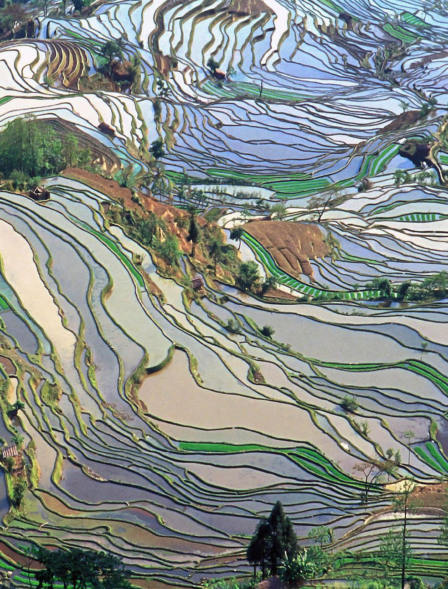

Ten years of ITLA and the potentials of terraced landscapes
Affiliations
- 1 Coordinator of ITLA, Honorary Research Fellow of the Center for Agroecology, Water and Resilience, University of Coventry,
- 2 Honorary Research Fellow of the Center for Agroecology, Water and Resilience, University of Coventry, England
International Terraced Landscapes Alliance Journal volume 1, issue 1, pp. 2020–2036 (2020) · Cite this article
- 256 views
- 314 downloads
- DOI10.5281/zenodo.5205435

Abstract
Herewith we highlight the growing awareness about the potentials of terraced landscapes emerging in ten years of ITLA (International Terraced Landscapes Alliance) by reviewing the main achievements of a rich and multidimensional exchange of experiences during four World Congresses in China (2010), Peru (2014), Italy (2016) and Canary Islands-Madeira (2019). The diverse actors: farmers, activists, and intellectuals who participated in these events interacted at different levels of human encounters, engaged in fruitful conversations, and listening to people from terraced communities. Every Congress yielded in a collective declaration showing a gradual growth of reflection about terraced agriculture as well as practical experiences endorsing alternative strategies and actions. We will convey the main conceptual elements surfacing the process of rethinking agriculture achieved from the IVth World Congress deliberations in La Gomera. They are inspired by the idea of reenchantment (Berman, 1981), which is essentially recuperating the experience of being part of nature and creating forms of Buen Vivir - Wellbeing (Gudynas, 2011). In terms of terraced landscapes, it means that farmers regain their dignity based on their right to choose new directions for the future and decide on what type of agriculture, crops, and forms of knowledge will enable them a long-lasting, sustainable world and peaceful social life (Anderson, 2020; Pimbert, 2018; Giraldo, 2018). We continue this ITLA introduction by offering strategies and three practical examples of initiatives in different mountainous regions that illustrate ways of reenchantment of terraced landscapes entailing future visions of wellbeing and a culture of joy to live. And we close with an outlook of the uses of an inventory and the future deliberations of the next ITLA Congress in Bhutan and its preparatory step of the ITLA caravan and the Summer Academy in Punakha, Bhutan.
The Alliance on Terraced landscapes
Introduction
Timmi TILLMANN
In this section on ITLA as an international alliance of local and regional networks, we open a forum for deliberation on the ideas and concepts of the various networks in the world’s terraced lands. We explain the evolution of ITLA as a growing movement of individuals and institutions working to conserve and recover terraced landscapes, support their inhabitants and reaffirm local cultures by promoting the special use of the diversity of products from terraces. In the coming years, we will reflect on the experiences of ITLA members and their local or national networks to re-enchant terraced landscapes and their guardians in different parts of the world - on all continents. In the ITLA Journal we aim to include articles about our alliance, the governance aspects of a global movement, the activities and events of local and regional networks, the presentation of innovative ways of thinking, acting and feeling, about the head, hands and heart of terraced landscapes and their custodians and builders. In addition to the ITLA Journal, we continue to send out the ITLA Newsletter to members who contribute to the circular newsletter with their announcements, experiences, publications and events. In this first volume of the ITLA Journal there are two parts related to the global movement of the International Terraced Landscapes Alliance: 1. Description of ITLA’s four international conferences, congresses, meetings in China, Peru, Italy and the Canary Islands/Madeira/Azores and their outcomes and conclusions. We present a brief description of the leitmotif for the 2023 global encounter “Widening our horizons” as a consequent realization of the promise to leave behind the colonial narrative of projecting the future of terraced landscapes with urban eyes. 2. Alain Hays’ discussion of the first congress in the Ailao Mountains in Yunnan and the development of the global movement of the International Terraced Landscapes Alliance, founded in November 2010 in Mengzi, Yunnan, China.
We hereby invite all terrace activists to send us reports and insights on their actions in the fields, reflections on Bancalismo, celebrations of successes and contemplations on failuresweaknesses-threats, as well as on future festivals of Bhutan 2023.

Ten years of ITLA and the potentials of terraced landscapes
Timmi TILLMANN1, Maruja SALAS2
Herewith we highlight the growing awareness about the potentials of terraced landscapes emerging in ten years of ITLA (International Terraced Landscapes Alliance) by reviewing the main achievements of a rich and multidimensional exchange of experiences during four World Congresses in China (2010), Peru (2014), Italy (2016) and Canary Islands- Madeira (2019). The diverse actors: farmers, activists, and intellectuals who participated in these events interacted at different levels of human encounters, engaged in fruitful conversations and listening to people from terraced communities. Every Congress yielded in a collective declaration showing a gradual growth of reflection about terraced agriculture as well as practical experiences endorsing alternative strategies and actions. We will convey the main conceptual elements surfacing the process of rethinking agriculture achieved from the IVth World Congress deliberations in La Gomera. They are inspired in the idea of reenchantment (Berman, 1981), which is essentially recuperating the experience of being part of nature and creating forms of Buen Vivir - Wellbeing (Gudynas, 2011). In terms of terraced landscapes it means that farmers regain their dignity based on their right to choose new directions for the future and decide on what type of agriculture, crops and forms of knowledge will enable them a long-lasting, sustainable world and peaceful social life (Anderson, 2020; Pimbert, 2018; Giraldo, 2018). We continue this ITLA introduction offering strategies and three practical examples of initiatives in different mountainous regions that illustrate ways of reenchantment of terraced landscapes entailing future visions of wellbeing and a culture of joy to live. And we close with an outlook of the uses of an inventory and the future deliberations of the next ITLA Congress in Bhutan and its preparatory step of the ITLA caravan and the Summer Academy in Punakha, Bhutan.


The Congresses
China 2010
The First International Terraced Landscapes Congress was held in Mengzi, Yunnan, Democratic Republic of China, in November 2010, organised by a group of Hani researchers on behalf of the Honghe Prefecture Government who funded this first encounter (Peters & Shi Junchao, 2012). Four major achievements can be highlighted from this event:
First, the pre-arranged opportunity given to an international conference audience to experience the remarkable rice terraced landscapes and its guardians in Yuanyang. This public involvement made possible to a large group of different actors to witness the problems and potentials that a complex organization of multiple ethnic groups face in conducting their rice terraces. This unprecedented encounter, in which academic knowledge and indigenous knowledge met, contributed to the formalization of the Hani Rice terraces in Yuanyang (Honghe Prefecture) as Unesco World Heritage Site three years later (Unesco, 2013).
The second achievement was the incorporation of the ethnic voices in the Conference Program. They explained visually and orally their own special relation to the environment stressing the social organization that keeps alive customary laws to maintain the fourfold terraced system (forest, water, terraces and houses) for centuries. Since then, the protagonist role of terrace farmers has been a major methodological principle (and challenge) in the following ITLA Congresses. In other words, the presence of the terrace farmers has opened a window to a wider scope of knowledge approaches regarding the cultural meaning of nature, the reasons behind the skills and practices in conducting agricultural activities in the terraces, from the perspectives of the farmers as subjects of knowledge.
Third, the organisers summarised the discussions and insights about terraced landscapes in the Honghe Declaration, that highlights the importance of terraced landscapes as creations of very diverse mountain cultures all over the world which need preservation, protection and promotion as land- and foodscapes.


And finally, ITLA, the International Terraced Landscapes Alliance, was born as a consensus of the majority of actors present in the Congress. More than 50 persons from 17 different countries endorsed their commitments to engage in activities to protect terraced landscapes in the world, expressed in the Honghe Declaration (Shi Junchao, 2010).
After ten years ITLA is a living Networks Alliance, with more than 280 active members in more than 35 countries in the world. The key of its sustainability as organization is its essential character as a decentralised alliance of networks (Hays, 2019) and the motivation of its members to share and learn as a collective movement.
Terraced landscapes are often unseen, silent. Many world countries have a rich heritage of them, notably in the hilly and mountainous regions of Europe, Asia, Africa and Latin America and on steep coasts and islands: Philippines, Japan, Vietnam, China, Nepal, India, Bhutan, Kurdistan, Georgia, Yemen, Morocco, Ethiopia, Cameroon, Uganda, Peru, Portugal, Spain, France, Germany, Switzerland, Austria, Slovenia, Croatia, Montenegro, Macedonia, Greece, Turkey, Cyprus, Italy and others. Their physical structures are enriched by a wide variety of local, precious details: from building techniques to choice of crops and traditional knowledges. These landscapes contribute strongly to the distinct character, to the diversity richness of the world and to the quality of life of its inhabitants. Terraced landscapes were built over the years to allow life in steep areas, they represent the perfect and only solution to cultivate the slopes of the mountains, the hills and the coasts, to answer the need for food and water supply, for the sustainable use of resources, for spiritual values. After the Second World War, many of them were abandoned because of the industrial/plains ‘golden rush’. But nowadays they are gaining new attention and they have become of interest for the same reasons they were originally built: food, water, soil erosion, fertility, spirituality, sustainability and diversity. The guiding methodological principle of the ITLA Conferences has been to offer democratic spaces for deliberation between the inhabitants and the activists as well as researchers of the terraced landscapes in the mountainous and coastal regions of the world.


Peru, 2014
The Second International Terraced Landscapes Congress was held for 5 days in Cusco, Peru in May 2014. Some participants took the chance ahead of the event to visit Andean communities in Yauyos, Arequipa, Ayacucho, Apurimac, Puno and Cusco. Following the accomplishments learned from the former event, this time the organisers stressed the encounter of cultures and knowledge systems (Tillmann & Bueno de Mesquita, 2015), which created an awareness about the viability of Dialogue as a process to safeguard the continuity of terraced landscapes for the wellbeing of society. Farmer exhibition of crops, seeds, photos, crafts as well as the farmer forum set the tone for the discussion in the Congress workshops. The concept of Sumaq Kawsay (Well Being) of the Andean cosmovision of harmony between human and nature changed the vision of the future for communities and their terraced land towards an intimate relation to mother earth and the apus, the mountain gods.
The II Terraces World Congress was held in Cusco (Peru) in May 2014. A large group of indigenous peasant farmers from different areas of the Peruvian Andes participated along with around 150 Peruvian and international researchers (Japan, China, Spain, Italy, Slovenia, Bolivia and the United States) as well as activists from NGOs and technicians from Peruvian public institutions.
The congress was organized by the Bartolomé de Las Casas Center (CBC), Catholic University and CONDESAN. It had the support of the Peruvian Ministries of Agriculture and Irrigation and of the Environment, the Regional Government of Cusco, the Provincial Municipality of Cusco and the National University of San Antonio Abad de Cusco. It was financed by the Inter-American Development Bank (IDB) through the AGRORURAL Terrace Program; by the Japan International Cooperation Agency (JICA); with funds from the development organization of Switzerland (Helvetas) and the Swiss Agency for Development and Cooperation (COSUDE) via the Program for Adaptation to Climate Change (PACC Peru); by the Episcopal Mission of the German Catholic Church (MISEREOR); the Catholic Committee against Hunger and Development (CCFD “Terre Solidaire”) of France and the Belgian development cooperation organization Broederlijk Delen. This congress was conceived as a meeting of cultures, knowledge, experiences and dialogue between peasant specialists, professionals, academic researchers and officials of the different administrations involved. In order to do this, it was decided to combine different means of presentation and visualization to generate a participative, flexible and enriching environment, breaking with the rigidity and speed of the presentations in more formal congresses.


The presentations of the works and discussion sessions were structured around five thematic lines: 1. water, soils and ecosystem services associated with climate change; 2. agro-biodiversity, food sovereignty and food security; 3. territorial management, social organization and local cultures; 4. modern and local technologies and tools; and 5. governance, national and international policies.
In Cusco, the venue of the congress, farmers from different Andean regions of Peru lived together in the Casa Campesina of the Bartolomé de Las Casas Center (Peasant Forum = intercultural dialogue), where the ceremony of asking permission from Mother Earth (Pachamama) was held in the evening before the inauguration of the congress. And, in the Convention Center of the Municipal Palace of Cusco, community members from the Sacred Valley played the “pututos” (marine conch) as a call to participation at the beginning of the congress, as is customary to call people to the community assembly in Andean communities.
The most noteworthy proposals formulated in the conclusions of the Second ITLA Congress are the following: to include the Andean or local indigenous knowledge in the university studies in the subject of scientific politics; on governance, the recognition of terraces as the source and base of small family and community agriculture, in the production of organic and healthy quality food with rich biodiversity. It was also proposed that terraces be recognized in the respective laws on water resources, environmental management and watersheds and in rural development, cultural landscape, tourism and land management policies. The last proposal to mention here refers to strategies for adapting to climate change because of its important role of terraces in harvesting rainwater and subsoil water.


Italy, 2016
The Third Congress about the Search for the Future of Terraces in Italy organised by ITLA - Italy, the region of Veneto, the University of Padua and ITLA happened for 10 days in October 2016 with events in Venice and in Padova at the Botanic Garden. This remarkable event combined the participation of a wide range of groups such as farmers, activists, academics, producers, school children, youth groups with visiting ten local sites spread in the mountainous and coastal regions all over Italy. The sites were selected due to the important presence of local organizations mobilizing a variety of initiatives to keep the terraces alive.
After the fieldwork a repertoire of themes were debated from ecological options for biodiversity regeneration to original legal arrangements, to property to gain access to produce in the terraces, as well as the display of innovative repertoire of market opportunities to the recreation of sources of identity with the localities. These, and other elements expressed by the Congress participants can be found in The Manifesto for the Choice of the future (Alberti 2018). The third International Congress contributed to the gradual growth of consciousness regarding the power of local organizations to energise the protection of terraced landscapes in the world. (Varotto 2019) A highlight was the competition of schoolchildren celebrating the richness of the terraces at their sites. Already in China in 2010 and in Peru in 2014 we were able to hear the voices of the farmer delegates and their concerns about the future of the terraces. We are still impressed by the collective effort to organise 10 parallel field trips involving hundreds of people and allowing a dialogue with activists and farmers from terraces. In preparation Valentina de Marchi filmed 10 testimonial videos within a year’s time prior to the Congress: http://www.terracedlandscapes2016.it/en/iii-incontro-mondiale-sui-paesaggi-terrazzati-ilvideo/
Our ITLA manifest from Padova (Summary) We commit ourselves to start the upward trend of the revival in the use and sustained management of terrace systems. This bold commitment is justified in our view by a series of impulses: these include the rising demand for fresh, locally produced food of known provenance and good quality, with lower food-miles and less artificial inputs; the need to provide support to small and family farms, and enabling a new generation of young farmers to gain access to the land and a dignified life in mountain areas. These factors provide the crucial starting-point for a new valuation of the vast inherited stock of terraced landscapes. They are a key part of the social and cultural richness of the world, created by the skill and the hard labour of past generations, capable of being used for decades and centuries ahead. They reflect a way of life, which in many regions is still continuing. But in other regions terraces have been abandoned, because of the hard work involved and outmigration. We believe that the challenge, in such regions, is to find new ways of life and viable activities, which will make good use of this inherited resource. The solutions can be based upon, and justified by, the long-term public benefits that terraced slopes can yield: the prevention of soil erosion; the mitigation of the effects of climate crisis; the control of flooding and management of water systems; the protection and enrichment of agrobiodiversity and ecosystems; the diversification of rural economies by adding value to different food, seeds and crops; the willingness to choose them as a viable option for people’s life; the educational value of heritage and cultural landscapes, and of the human and natural stories which they embody; and also the beauty and appeal of these landscapes for leisure and tourism. This rich range of benefits or ‘public goods’ justifies a new governance and the injection of communal resources – at local, regional, national, continental or global scale – into the maintenance, and where necessary the redemption, of terraced lands.


Canary Islands, Spain, 2019
The Fourth World Congress in the Canary Islands added a new quality to the former congresses by framing the growing awareness for the protection of the terraced landscapes in a historical context of Reenchantment.
At the initial conference of three days in the rectorate of the University Las Palmas de Gran Canaria researchers, activists, policy makers nurtured the discussions about the situation of terraces worldwide and in the Canary Islands. Then after four days of field work in seven islands ten groups felt inspired to elaborate practicable conclusions, product of a collective effort in thinking under four specific topics: Living, Learning, Working and Knowing in terraced landscapes.
The guiding methodological principle of the 4th ITLA World Congress of La Gomera and in Macaronesia about the Re-enchantment of the Terraced Landscapes was the creation of democratic spaces for deliberation between the inhabitants, the activists as well as the researchers of the terraced landscapes in the mountainous and coastal regions of the world. After fieldwork on 8 islands the 4 working groups of Living, Wisdom, Learning and Working discussed in La Gomera their topics, visions and proposals for action, which were presented graphically by the team created by Carlos Jimenez at La Laguna in Tenerife. The presentations of the 4 groups were summarized by Tessa Matteini, director UNISCAPE, Italy, Michel Pimbert from CAWR, Coventry University, UK and Lučka Ažman, the scientific coordinator of ITLA and the 4th Congress, and from Ljubljana University, Slovenia.
Terraced landscapes are suppliers of healthy food and beautiful landscapes. In this respect, the farmers work for their livelihoods and for all citizens, demanding equal opportunities and the recognition of their work. There are several levels of learning about terraed landscapess. First is recognizing its existence, values and recognizing the deterioration of its material heritage and the consequences of such deterioration. Mapping existing, abandoned and heritage terraced landscapes is essential for commitment in terraced areas and also the basis for its innovative preservation.


The Shift of Paradigm
The growing awareness about terraced landscapes is being shared by most members of ITLA. The following statements presented at the concluding session of the IVth Congress in March 2019 in La Gomera as result of the thematic workshops and the field experiences contain relevant conceptual elements to take into consideration for the paradigm shift towards the revival of terraced landscapes. (Azman, Matteini, Pimbert 2020)
New narratives emerging from participatory processes,
“Experiences and explorations from within, from participatory fieldwork, offer a variety of conceptual approaches to understand and explain the situation of terraced landscapes. New narratives move away from colonial, external views, towards internal, de-colonized minds. Most presentations on terraced landscapes explicitly or implicitly call for a reversal of the colonial narrative, which is based on the needs and visions of powerful others.“
The power shift
“Terraced landscapes are presented as “landscapes of opportunities.” However, realising the potential of these opportunities requires a very different model of learning and innovation—a shift from the transfer of technology model to learning and action rooted in the decentralised and bottom-up production of collective knowledge.”
Buen vivir (Well being)
“Terraced Landscapes contribute to the identity and profile of local cultures, are an important part of people’s quality of life, and ensure diversity and making a region attractive, thus preserving settlements and the vitality of rural areas. Identity plays a role in reestablishing the connection with the “land of one’s forefathers.” In many cases, young people are returning to forgotten farms inherited from their parents. This connection, however, not only refers to possession but can also describe affiliation acquired through caring for the land.”
Farming with dignity
“With the loss of arable land that becomes non-farmland, we not only loose protection from natural hazards, but also farmers, families, communities, and so on. This process

Reenchanting in Practice
also leads to the loss of agrobiodiversity, and of ecological and cultural complexity, and
From the diverse experiences of reviving terraces we have known during the 10 years of heritage landscapes gradually become abandoned places without opportunities. Migration
the international alliance we reproduce three examples, which show the creativity and and climate change, often seen only as challenges to landscapes, could be rethought in
richness of the mobilisation of different actors for the well being of living in the terraces. order to preserve and revitalize Terraced Landscapes. In this sense, migrants could find a new dignified life by becoming farmers in heritage terraces, and climate changes could
Adopt terraces (Brenta Valley, Italy)
be interpreted in order to introduce different species of crops that are more adaptable and
In the Brenta Valley, Veneto, Italy, the abandonment of the terraces due to migration, resilient, also exchanging best practices and knowledges within an international farmers’
industrial agriculture and urbanization has distorted the essential ecological, protective network. There are a variety of different approaches to keeping Terraced Landscapes alive
role of the terraced landscapes. The slopes in the last century lost the farmers population, and continuing work on the land.”
who were replaced by temporary visitors and an increasing infrastructure to host the masses of tourist. All this degradation of the cultural terraced landscapes, former tobacco
Works of Art
monoculture and the deterioration of water supply for irrigation, was perceived by a “Being alive means thinking about reusing abandoned Terraced Landscapes, whether
group of citizens who associated in a Committee and got the support of the Commune they serve as a source of inspiration for successful projects by artists and designers, or
of Valstagna, as well as from other crucial supportive actors like the University of Padua. whether they could economically stabilize and revitalize the local region. Intensive agriculture has no priority over extensive agriculture on terraced mountain slopes because extensive agriculture has quality characteristics that cannot be achieved through intensive production.”
Designing collective heritage
“Reinventing Terraced Landscapes is probably the only way to save them from extinction through adaptive use, seeking to combine the traditional way of living and “producing landscapes” with a contemporary attitude open to innovation for the inventive conservation of agricultural heritage. More endogenous forms of development would be based on decentralised planning as well as citizen decision-making that prioritises local knowledge, analysis, and definitions of wellbeing. An interesting proposal is to set up a Peasant Observatory of Terraced Landscapes to oversee and guide the regeneration of local ecologies, economies, and wellbeing.” (Azman, Matteini, Pimbert 2020) The catastrophic eruption of the volcano Timanfaya in the 18th century destroyed communities and agricultural land but the ingenuity of the local people from Lanzarote created new vineyards in the ashes offering an artistic landscape They formalised their wish to create a homeland for everyone willing to associate and

farmers. They are persons who voluntarily want to tell a message of hope to the younger dedicate their time conducting actively the care of the terraces by own responsibility.
generation, school children, university students and visitors to recuperate and maintain alive the material, cultural and historical patrimony of their localities. The great value Since May 2014 the terraces that have been allocated by the commune under clear
of this initiative is to link the knowledge forms of the elder generation, which has not agreements of user rights (lease contracts) which have favoured local citizens, young
been written about and pass it down to the younger generation. They feel empowered people and also school children giving them a chance to learn agricultural knowledge and
to recreate the memory of the places, such as vineyards, dry stone walls, water channels, skills for the production of diverse crops and maintenance of the terraces. Cinzia Zonta
medicinal plants, agricultural crops existing or in process of disappearing. who is an active associate of this Initiative informs about the gradual growth of this experience into a regional scope of intercommunal action.
Since these initiatives are coordinated with a new type of consciousness, Dr. Lidia Romero, professor at the Faculty of Geography in Gran Canaria is actively engaged in
The Wise Guides and interpreters (Canary Islands)
creating spaces for the elder wise women and men of the islands to design and tell a This is an initiative supported by the Foundation Lidia García in Gran Canaria to identify
new history of the local territories, enhancing the cartography of the memories from and support persons with a long life experience in their home localities of the different
the mind and experiences in the own voice and knowledge of local people. A startling Canary Islands with a strong sense of belonging towards their territories. They are men
point of departure for shaping new directions against the food dependency from the or women that possess an own narrative constructed on the basis of their life routes as
agro industrial model based on the export-import of agricultural commodities. The intergenerational transmission and recreation of agricultural knowledge for sustainable production in terraced landscapes will bring refreshing original alternatives.
The ownership Program in Japan
The rice terraces, Tanada in Japanese are historically intertwined with an outstanding agricultural status as well as in the art production. Inventories give account of millenary rice landscapes in steeper areas that continue to produce several rice varieties for the Imperial Family and also for the common population. Although the melting of cultural tradition and technological creativity had kept alive the provision of rice, since 1990 the paddy field terraces confronted a crisis of increasing abandonment due in part to the outmigration of the youth and growth of urban population and the ageing of the farmers without successors.
This situation led to new ways of experimenting Urban-Rural pacts to conserve the Tanada. On one hand, urban population was invited to witness the abandonment of cultivation through touring in the paddy fields by means of cultural events like theatre, establishment of Tanada supporters, publication of books about these precious landscapes, organization of Tanada Summits during the last 30 years, launching the Rice Terraced Research Association. All these processes aimed at the closing of the gap between urban and rural population, mobilised urban people to change their awareness about the Tanada and getting involved in the support of a political program called Direct payment to terraced landscape and its guardians, that started in the year 2000.


The political frame included subsidies to continue the production of rice in the slopes based on group plans with activities such as maintaining waterways, environmental values, adopting friendly agricultural practices and promoting urban rural partnerships.
The strength of the political program relies in the further maturity of mutual help between urban and rural people to keep the terraces alive. Urban families contribute to the production of rice in the Tanadas with their work and their rice price subsidies. The local farmers as counterparts form a local rural association according to the knowledge and experience who organise the rice production process while the landowners maintain their properties. Urban consumers, the local management group and the landowners benefit from the exchange of mutual help, it is an example of a win-win relationship.
The urban people ensure the annual provision of quality rice and broaden their cultural appreciation for rural life while the farmers recover their self esteem and dignity by keeping their properties and paddies productive, involving urban people in the agricultural knowledge and practice of producing organic rice (Yamaji, 2020; Kieninger, 2011).
The elders still have an intimate relation to the land, seeds and seasons. Their cultural identity is linked to their land and food. The new ways of dealing with the terraces require many levels of reconnecting to nature, to worship life with a respect to the land and to the seeds, to construct social forms of reciprocity to live on the land. It also requires to continue the transmission of knowledge between the generations, as well as creating relations with consumers (rural or urban) who value the origin of food from terraced areas and who want to establish a close contact to the terrace farmers (Varotto, 2019).


ITLA Caravan towards the Vth Congress in Bhutan
ITLA as an international alliance of local networks supports the elaboration and publication of experiences and promotes the exchange between farmers and scientists of all mountain regions of the world for the benefit of nature and people.
ITLA now is engaged to organise the Vth Congress in Bhutan (may be in 2023), the land of the Gross National Happiness Policy, in cooperation with the Royal University of Bhutan with the theme of ‘Widening our horizons’, as the reenchantment of terraces requires new ways of thinking about our relation to development, land, seeds, food within the frame of cultural identity. Decolonise our mind, our theories and models, will provide the elements of a strategy to let people expand their quality of life, learning from mountain cultures worldwide.
For the Vth Global ITLA Encounter in Bhutan in 2023 we propose a series of local caravans of events and workshops in 2021 and 2022 to build up a momentum to celebrate the terraced landscapes from all mountainous regions all over of the world.
For the preparation of the next Global ITLA Encounter we are thinking about ways in which to involve terrace users-builders-guardians around the world, who have been re-enchanting terraces, to engage in local activities, workshops and events that lead up to the larger ITLA V congress in 2023. We envision local “caravans” which would move from village to village, from region to region, from country to country that are homes to terraced landscapes. These local caravans will bring together the voices of the different users of the terraced landscapes: farmers, peasants, cultivators, builders, and stone wallers to talk about their terraces, and the issues and indigenous knowledge that help them to manage and safeguard them.
ITLA is a movement built as an alliance of local and regional networks. We envision the caravan as a decentralised and autonomous process, and it is our goal to support it by providing methodological backing and guidance for the participatory processes of local ITLA networks in their areas and regions. The aim is to revise the common conceptual bases underlying the different dimensions


References
- Alberti, F.; Dal Pozzo, A.; Murtas, D.; Salas, M.A.; Tillmann, T. (eds.) (2018) Terraced landscapes: choosing the future. Proceedings of the Third World Meeting of ITLA. Venice: Veneto Region.
- Anderson, C.; Bruil; Kiss; Chappell; Pimbert, M. (2020) Scaling Agroecology from the Bottom up: Six Domains of Transformation Growing the Movement for Agroecology. https://foodfirst.org/publication/scaling-agroecology-from-the-bottom-up-six-domains-of-transformation/
- Ažman Momirski, L.; Matteini, T.; Pimbert, M. (2020) Key issues in terraced landscapes (TLs), in RE- ENCANTAR BANCALES; DECLARACIÓN DE LA GOMERA, Conclusiones del IV Congreso Mundial ITLA 2019. La Gomera: ITLA, Canarias Cultura En Red, Observatorio del Paisaje del Canarias.
- Berman, M. (1981) The reenchantment of the world. Cornell: Cornell University Press.
- Cosner, A. (2015) Metodologia per l'individuazione e la classificazione dei paesaggi terrazzati in trentino. Rapporto sullostato del paesaggio 05. Trento: Osservatorio del paesaggio trentino.
- ETC-Group (2017) ¿Quién nos alimentará? La red campesina alimentaria o la cadena agroindustrial. https://www.etcgroup.org/es/quien_alimentara
- FAO (2018) Globally Important Agricultural Heritage Systems (GIAHS). Combining agricultural biodiversity, resilient ecosystems, traditional farming practices and cultural identity. http://www.fao.org/family-farming/detail/en/c/1147754/
- Giraldo, O.F.; Rosset, P. (2018) Agroecology as a territory in dispute: between institutionality and social movements, The Journal of Peasant Studies 45/3, pp. 545–564.
- Gudynas, E. (2011) Buen vivir: Germinando alternativas al desarrollo. http://www.ecominga.uqam.ca/PDF/BIBLIOGRAPHIE/GUIDE_LECTURE_1/Gudynas-Buen-vivir-Germinando-alternativas.pdf
- Hays, A. (2020) From world heritage to an international living networks' alliance, International Terraced Landscapes Alliance Journal 1/1, pp. 32–64.
- Kieninger, P.; Eiji Y., Penker, M. (2011) Urban people as paddy farmers: The Japanese Tanada Ownership System discussed from a European perspective, Renewable Agriculture and Food Systems 26(4), pp. 328–341.
- Peters, H.; Shi, J. (eds.) (2012) First Terraced Landscape Conference: (Honghe China) paper collection. Kunming: Yunnan People's Publishing House. Pérez-Vitoria, S. (2010) La riposte des paysans. Arles: Actes Sud.
- Pimbert, M. (ed.) (2018) Food Sovereignty, agroecology and biocultural diversity. Constructing and contesting knowledge. Oxon, UK: Routledge, Earthscan.
- Salas, M. A.; Tillmann, T. (2021) Conversando nos entendemos. Métodos de la Investigación Acción Participativa para transformar y reencantar la realidad, in Encuentro de culturas y saberes de terrazas del mundo. II Congreso Internacional de Terrazas. Cusco: CBC – JICA.
- Tillmann, T., Bueno de Mesquita, M. (2015) II Congreso Internacional de Terrazas. Encuentro de culturas y saberes de terrazas del mundo. Cusco: CBC; Lima: JICA.
- Varotto, M.; Ferrarese, F.; Pappalardo, S.E. (2019) Italian terraced landscapes: The shapes and the trends, in World Terraced Landscapes: History, environment, quality of life. Cham, Switzerland: Springer Nature.
- Yamaji, E. (2020) Rice Terrace and Its Conservation by the "Ownership" Program in Japan. The Journal of terraced Landscapes 1/1, pp.2020 VOL. 1 NUM. 1 31
Rights and permissions
Open Access. This article is licensed under a Creative Commons CC BY 4.0 license, which permits use, sharing, adaptation, distribution and reproduction in any medium or format, as long as you give appropriate credit to the original author(s) and the source and indicate if changes were made.
About this article
Cite this article
Tillmann, T., & Salas, M. (2020). Ten years of ITLA and the potentials of terraced landscapes. International Terraced Landscapes Alliance Journal, 1(1), 2020–2036. https://doi.org/10.5281/zenodo.5205435
- Published
- October 2020
- Issue
- Volume 1, Number 1
- Journal
- International Terraced Landscapes Alliance Journal, ISSN 2754-7639 (Online)
- Archive
- Zenodo record 5205435